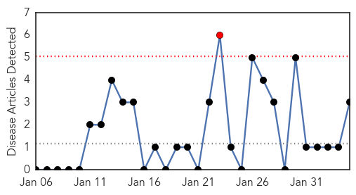
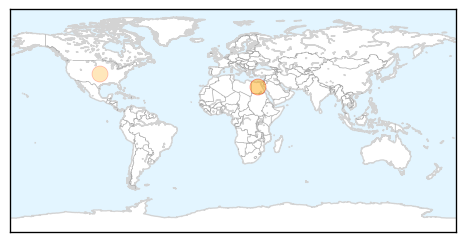

Hepatitis
30-Day Web Trend
1 alerts, 0 warnings

30-Day Twitter Trend
0 alerts, 0 warnings

Article Locations
Article Confidences
Top Articles:
Top Tweets:
-
No tweets found for Feb 04, 2015
Swine Flu
30-Day Web Trend
11 alerts, 5 warnings
30-Day Twitter Trend
0 alerts, 0 warnings

Article Locations
Article Confidences
Top Articles:
- 0.999
- Naidu directs officials to fast-track swine flu tests
- 0.999
- Cuttack admin gears up to create awareness about swine flu
- 0.999
- Jan saw 13 swine flu deaths in city
- 0.998
- Swine flu claims 8 more lives in Gujarat; death toll reaches 53
- 0.998
- Swine flu knocking on Mumbai’s doors
- 0.997
- Seven swine flu deaths reported in January
- 0.997
- Death toll mounts to 63 in Rajasthan
- 0.997
- H1N1 deaths: Health Ministry takes stock of situation
- 0.995
- With 5 swine flu cases, city hits panic button
- 0.994
- Swine flu spreads tentacles, 60-yr-old man succumbs
- 0.990
- 4 deaths due to swine flu in Punjab: Minister
- 0.989
- Swine flu outbreak: Two more deaths reported in Telangana; 36 victims so far
- 0.983
- Swine flu toll reaches 18
- 0.980
- H1N1 returns to Mumbai, 24% mortality in state
- 0.970
- Two more suspected swine flu patients admitted
- 0.970
- Man dies of H1N1 in Coimbatore
- 0.963
- INFORMATION AND SERVICES IN GOA. Goa News, Goa Konkani News, Goa Sunaparant News, Goan Konakani News, Goa Video News, Goa Yellow Pages
- 0.945
- H1N1 Claims Second Victim
- 0.944
- Swine flu screening center mooted for Tirumala bound pilgrims
- 0.934
- Cold conditions return to Bhubaneswar
- 0.927
- Patient critical in Ongole
- 0.906
- New hog panel to assess threats
- 0.906
- Swine Flu: Three more deaths recorded in Gujarat
- 0.866
- Swine flu screening centres soon for Tirumala pilgrims
- 0.746
- Congress to target Bharatiya Janata Party’s Gujarat govt on swine influenza, graft during Assembly
- 0.731
- 3 deaths on Tuesday, toll touches 50
- 0.683
- Sen. Rand Paul Just Dropped the Hammer on Vaccines
Top Tweets:
-
No tweets found for Feb 04, 2015